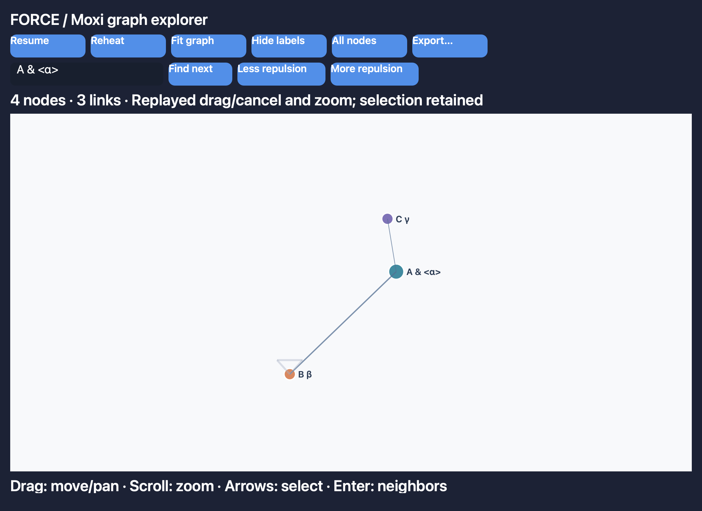
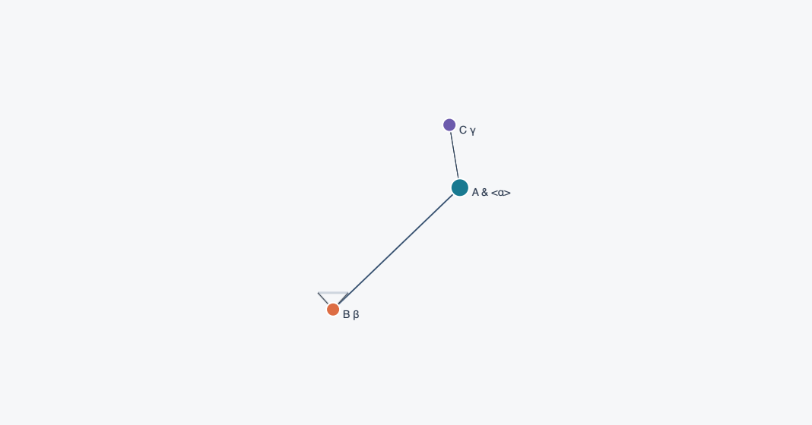
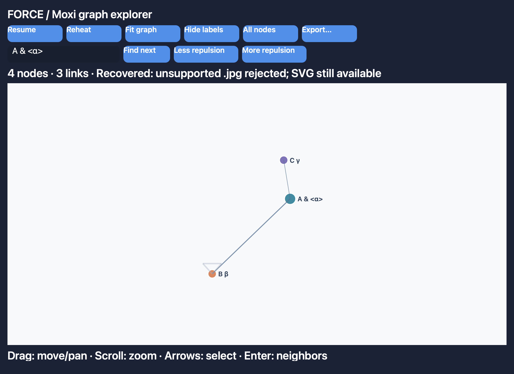

Search selected the Unicode ID; neighborhood enabled Action: Replay Find and Neighbors through the actual App dispatcher Expected: Selected alpha plus beta/gamma; isolated node absent
initial · offscreen-render · 2200 × 1600 pixels

Dragged selected node, cancelled drag, then zoomed Action: Dispatch pointer down/move/cancel and scroll to the real application Expected: Selection/filter retained; graph geometry and viewport change
Current application state exported in three formats Action: Export the current scene as SVG, PNG and PDF without advancing the solver Expected: Saved status; same selection, neighborhood and camera
result · offscreen-render · 2200 × 1600 pixels
Reopened PNG export Action: Read/decode the PNG with Pillow; assert scene geometry against SVG and PDF Expected: Graph canvas only; weighted edges, loop, labels and selected outline preserved
result · offscreen-render · 1068 × 560 pixels

PDF independently rasterized with PDFium Action: Open actual PDF, extract Unicode text and rasterize at 96 DPI Expected: Same page size, labels and node centers as the PNG
result · offscreen-render · 1068 × 560 pixels

Unsupported extension rejected; SVG succeeds afterward Action: Attempt .jpg, require failure, then export recovered.svg Expected: Explicit recovery status; application state remains available
recovery · offscreen-render · 2200 × 1600 pixels
Contact sheetReproduce
See examples/fdg/P06.md. Run the appropriate native --replay with tests/fixtures/export.json, then tests/verify_artifacts.py and scripts/evidence.py; PNG/HTML and export binaries are local ignored artifacts.
Synthetic finite replay in the real native application: search/neighborhood, drag/cancel/zoom, export and recovery. No human interaction claim.
Screenshots show recorded states. They do not establish latency, scientific accuracy, physical IME, screen-reader behavior, or human usability.